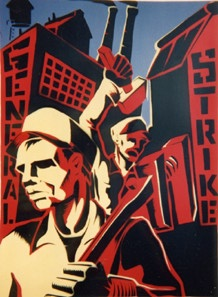

Britain: More than one million strike over cuts in pension provision, but unions limit protest
Submitted on Thu, 03/30/2006 - 2:09pm
Disclaimer - The following article is reposted here because it is an issue with some relevance to the IWW. The views of the author do not necessarily agree with those of the IWW and vice versa.
By Julie Hyland - From wsws.net, 29 March 2006
Thousands of schools, local government facilities and transport services across the United Kingdom were closed or partially closed Tuesday as almost 1.5 million local government workers took strike action to defend their pension rights.
But from the outset, the leadership of the 11 unions involved in the dispute sought to demobilize any active participation by workers. In the main, pickets were at a minimum and any visible signs of protest were patchy and kept limited. In Manchester, England’s third largest city, the regional trade unions called off a lunchtime rally at the eleventh hour.
Prime Minister Tony Blair’s government wants to overturn the provision under the Local Government Pension Scheme (LGPS) whereby local council employees can retire at the age of 60 on a full pension if their age and years of service total 85. The change means that some of the poorest paid workers in the public sector, many of whom have contributed to the retirement plan for years, have been issued with an ultimatum—work many more years or face a one-third cut in pensions.
The government had initially wanted to impose its attack on all public sector workers. But in a move clearly aimed at dividing workers so as to pick off their rights one section at a time, it agreed that existing firefighters, teachers, National Health Service staff and some civil service employees could keep their full entitlements, whilst the conditions of those working in the local government sector would be cut.
The public sector unions, which include some of the largest unions in the UK, such as Unison, the GMB and the Transport and General Workers Union, played a crucial role in facilitating the government’s manoeuvre. A planned strike in protest at the cuts was called off by the union bureaucracy last May so as to avoid a potential conflict between the Labour government and a significant section of workers in the run-up to the 2005 General Election.
The union bureaucracy has accepted that the retirement age for new local government employees will rise to 65, and have sought to confine the protest solely to retaining the so-called 85-year rule for existing staff, i.e., the same deal that was agreed with regards to central government employees.
A three-month consultation between the government, the unions and local government employers ended without agreement on February 28. Subsequently the unions have scaled back protests and worked to ensure that yesterday’s one-day strike was of purely a token character.
Nonetheless, membership ballots by the unions involved returned overwhelming support for industrial action. Amongst those participating in the 24-hour dispute were leisure centre workers, school caretakers, cooks, cleaners and classroom assistants, housing officers, nursery nurses, youth and community staff and tourism officials. Traffic wardens, the Probation Service, occupational therapy and other social services joined the strike, as did workers in public services that have been privatized, including bus drivers and refuse collectors.
In Northern Ireland, all bus and rail services were cancelled and in Scotland hundreds of schools and nurseries were closed whilst Glasgow’s subway system was shut, and Edinburgh’s council-run bus service was off the road.
In Wales, almost 800 schools were shut as were many libraries and council-run facilities. In the north of England, in addition to extensive school closures, both Liverpool’s Mersey tunnels were closed as were its ferry service, and Newcastle’s Metro system did not open.
In London, some 70 percent of all schools were shut as more than 100,000 workers struck, including workers in the capital’s Fire Brigade control room. The Tower of London was closed and the Thames Barrier reduced to emergency staffing levels.
Pension provision in the public sector is one of the few areas of employment rights still retained in the UK after decades of cuts in social services and the deregulation of working conditions. An official government study by the Financial Services Authority and Bristol University reported Tuesday that almost half the working population have no pension outside the paltry state retirement benefit and 70 percent have no means of saving for their old age.
Throughout the day, spokesmen for the government reiterated that there would be no retreat from its plans, and the media and big business leaders are demanding even tougher cuts and have denounced the striking workers as “selfish.”
Rupert Murdoch’s Sun complained that local government workers were attempting to defend a right not shared by millions of others workers, many of whom, it admitted, “will retire in poverty.” Why local government workers should be willing to abandon the last shield between themselves and a similar fate, it did not bother to explain.
The Financial Times editorialised March 28, “Stand firm on local government pensions.” Labour was “entirely to blame” for the strike, it complained, because in abandoning plans to raise the retirement age of all public sector workers, it had “sent a signal that unions could defend the indefensible if only they were prepared to act tough enough.”
Sir Digby Jones, head of the Confederation of British Industry, described the action as “trade unionism at its worst.” Like other workers, local government employees would have “to get real” and accept “longer working lives.”
At the Guildhall in central London, Chancellor Gordon Brown strode through a picket of local government workers as he attended a conference with former US President Bill Clinton.
In the face of such vitriol, all the trade union leaders had to offer was more pleas for talks. A common refrain from speakers addressing a rally of several hundred strikers in central London was, “I wish I wasn’t here.”
Brendan Barber, general secretary of the Trades Union Congress, told the assembled workers that the unions were not against reform, but changes by “diktat.” The strikes demands were “reasonable” and the government and employers should sit down with the unions and “negotiate properly,” he said.